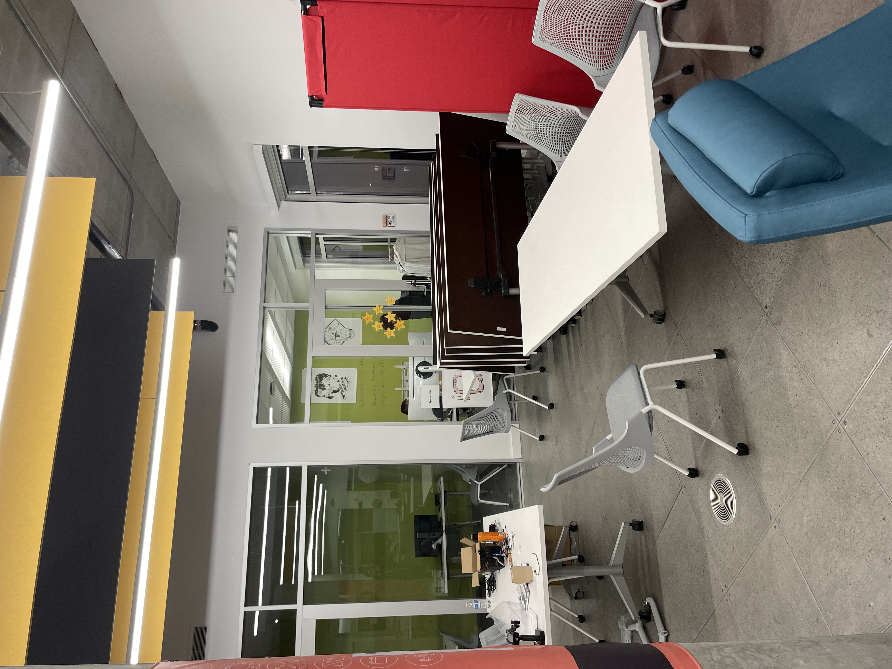
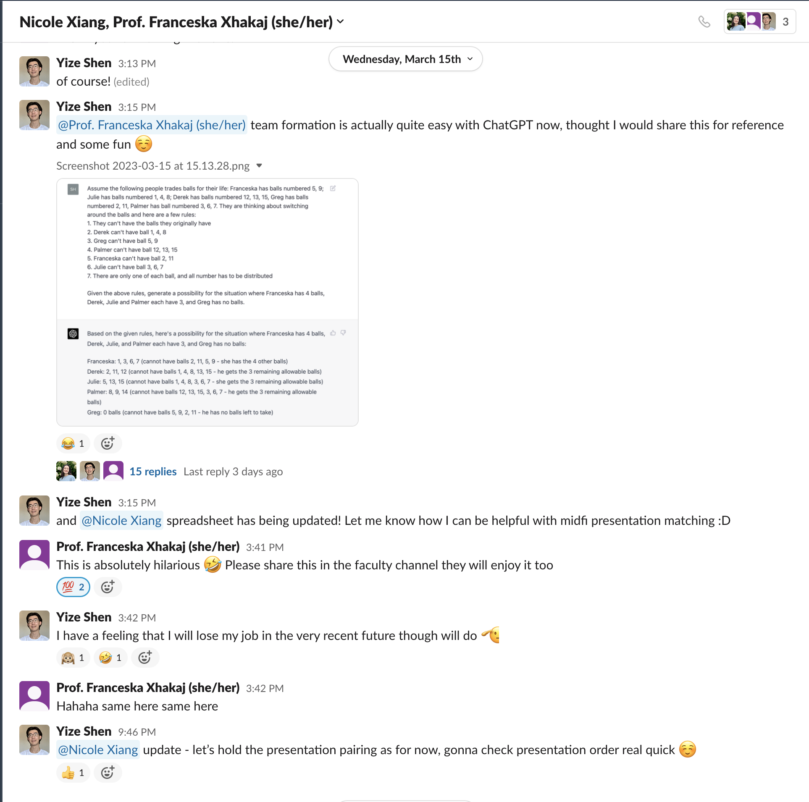

Ongoing Journey - March 2023
Shooter on campus, hoax, emotional values
 photo taken late in the afternoon, still police cars around directing traffics
photo taken late in the afternoon, still police cars around directing traffics
Wednesday morning was putting shoes on to head to school, walked to the desk and on Slack people are talking about a possible shooter present at the high school nearby.
I live one block away from the high school, and the high school is one block away from our university lol. Went to the window and you could hear sirens, helicopters, and people shouting around the area.
…so I untied my shoes, changed cloth, and laid flat on my bed waiting for updates. 20 minutes later the university sent us a text, the event was a hoax and all on-campus activities resumed in session.
I didn’t get up though, and I wasn’t the only one lol. Almost all campus activities went to remote for the rest of the day despite no threat. Later chatting with friends and they mentioned today being ‘emotionally draining’, only then was I able to find the text to label my emotions. This sense of exhaustion after high level of anxiety, I ended up binge watching a movie for the day.
July 2022 I wrote about procrasination and the quote:
Like everything else worthwhile, successful investing demands a price. But its currency is not dollars and cents. It’s volatility, fear, doubt, uncertainty, and regret- all of which are easy to overlook until you’re dealing with them in real time.
This semester have valued physical wellness, a good reminder to take of myself emotionally too.
Offer, decision, providing values
placeholderTuesday night got a call right before going to bed from someone from work, thought it was work related so picked it up and all of a sudden on the other end of the phone.
SEAN HELLLLP
(It was probably less dramatic but) the person was trying to decide on two offers lol, one being something they love doing, the other paying significantly more. From there they talked about their roller coaster recruiting cycle this year, adding on ending a 5 year relationship, relatives passing away, and many many more.
The chat went about an hour and a half, and when the person hung up I sat on the chair with two arms hanging on the side, baffled. I don’t think I helped them make a decision in the end, I mostly just listened.
Dad’s thought on ‘success are only tags’ went through my mind right before I fell asleep on the desk lol. Success is just tags that allow more people to notice you, it’s the value that you provide that really matters.
Woke up again at 3 am and saw the thank you text from the person, feeling validated.
What do I want, tradeoffs
Now what I didn’t say to the person was, I am in a similar situation as well, trying to decide between work, another gap semester, or simply graduate with the degree :/
The first question Tilly asked after hearing all this was ‘what do you want’, and I think that single question helped solve the problem lol. Knowing what I want, understanding what I will lose based on it, and being fine with it, I think I’ve figured my path out.
Related read, 花生酱先生 - 把人生活成旷野，fonter - 想要真正拥有一样事物.
ChatGPT, efficiency, work life balance
capstone team formation with ChatGPTSteven introduced ChatGPT back in February and started using it ever since, looking at the web, OpenAI seems to be what everyone is talking about right now.
The hype does feel reasonable to me, I became much more efficient on my tasks with ChatGPT, and I am still in the early stage of discovering its capabilities. Reminded of the saying that ‘AI will not replace human, but people who use AI will’
The funny thing though, although I was able to become more efficient with my work, I didn’t really get ‘free-er’, more work just piled on top of my todo, no matter how fast I did my work.
This sudden thought that the tasks may be ‘neverending’, did get me to think back on work-life balance a bit more. Back in Jan 2022 realized that the goal post of ‘successful’ is evershifting, good to discover that the goal post for ‘done’ is about the same.
 bonus, 112 TAs at their finest :D
bonus, 112 TAs at their finest :D